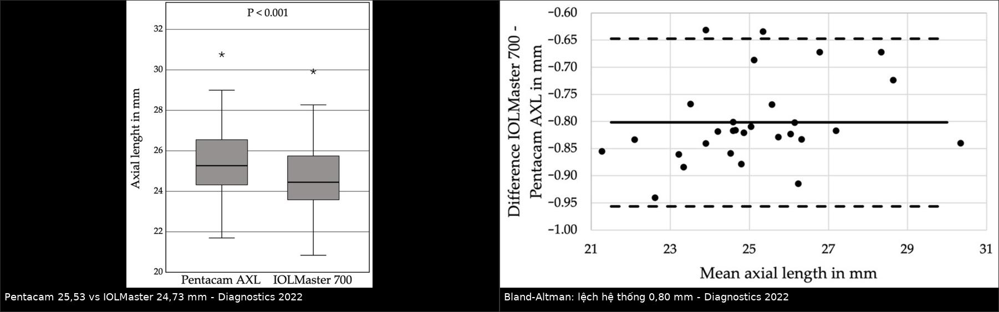
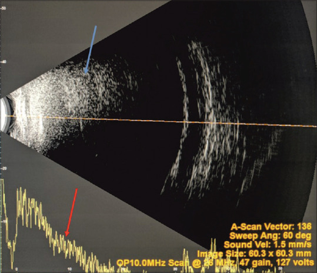
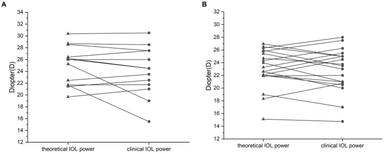
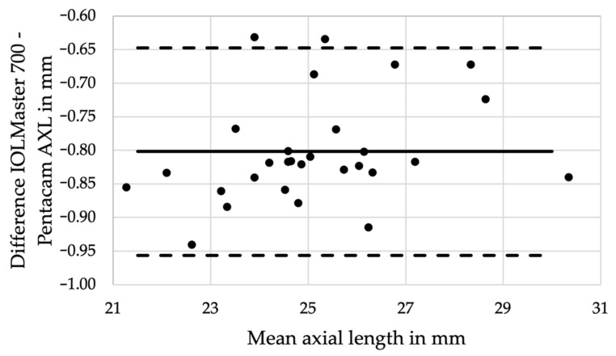

1477 — Đo trục nhãn cầu và tính công suất IOL ở mắt bơm dầu silicone / Axial length and IOL power in the silicone oil-filled eye
Tags: pattern:lo-an-cau pattern:al-gia pattern:dau-silicone vung:mat vung:dich-kinh vung:the-thuy-tinh anatomy:dich-kinh protocol:IOLMaster protocol:sinh-trac protocol:sieu-am-A-scan protocol:B-scan-ngam score:Barrett-Universal-II
Mức chắc chắn (certainty): tổng hợp y văn (literature synthesis) — 50 mắt so A-scan 980 m/s với LENSTAR (PMC9672780), 50 mắt dựng công thức hiệu chỉnh AL (PMC10417960), 29 + 12 mắt hiệu chỉnh Pentacam AXL (PMC8775324), 72 mắt IOLMaster 700 sau bơm dầu 5000 cSt (PMID 39034156), 77 mắt so AL mắt bơm dầu với mắt bên (PMID 37845000), 67 mắt cận thị rất cao đo B-scan ngâm phân đoạn (PMC9091887), 32 mắt dầu tồn lưu vĩnh viễn với công thức chiết suất (PMC10626459). Câu nào là suy luận được ghi [suy luận].
Vì sao bài này quan trọng: 1462 đã chốt nguyên tắc giác mạc méo thì K sai; bài này là mặt sau của cùng sai số: môi trường trong khoang dịch kính bị đổi thì AL sai — và ở mắt bơm dầu, sai số lớn hơn một bậc (hàng milimét, không phải 0,1 mm). Ở ngưỡng lan truyền 0,1 mm AL ≈ 0,28 D khúc xạ sau mổ, một AL sai 0,80 mm = ~2,2 D; còn bơm dầu 1000 cSt mà máy để vận tốc mặc định 1532 m/s thì AL có thể bị đọc 31,76 mm trong khi trục thật 24,70 mm (PMC10417960). Hậu quả không phải "kính hơi lệch" mà là mổ lại để đổi IOL.
1. Tổng quan bệnh học – cơ chế hình ảnh
- Sinh trắc (biometry) là phép đo gián tiếp qua thời gian bay hoặc quang trình. Siêu âm A-scan tính
d = v_assumed × t / 2; sinh trắc quang (partial coherence interferometry — PCI, hoặc swept-source OCT — SS-OCT) tính quang trình rồi chia cho chiết suất nhóm quy ước của dịch kính. Cả hai đều giả định khoang dịch kính chứa dịch kính/dịch (n = 1,336; v = 1532 m/s). Dầu silicone phá cả hai giả định, theo hai hướng ngược nhau về bản chất nhưng cùng gây sai. - TẠI SAO siêu âm đọc DÀI (overestimation): vận tốc âm trong dầu 987 m/s ở dầu 1000 cSt, thấp hơn dịch kính 1532 m/s (PMC9672780). Cùng một khoảng cách hình học, xung đi lâu hơn 1532/987 = 1,55 lần; máy vẫn nhân với 1532 m/s nên đoạn chứa dầu bị đọc dài thêm ~55%. Đây là lý do một mắt có đoạn dầu ~13 mm có thể bị đọc 31,76 ± 3,09 mm so với 24,70 ± 1,74 mm của sinh trắc quang (PMC10417960) — chênh 7,05 ± 2,39 mm, không phải sai số ngẫu nhiên.
- TẠI SAO sinh trắc quang cũng đọc dài (nhưng ít hơn nhiều): chiết suất dầu n = 1,403 so với dịch kính 1,336 (PMC10626459); quang trình dài hơn theo tỷ lệ 1,403/1,336 = 1,050 — tức +5,0% trên riêng đoạn dầu. Với đoạn dầu ~16 mm: +0,80 mm, đúng bằng lệch hệ thống 0,80 ± 0,08 mm đo được giữa hai máy quang học trên cùng 29 mắt bơm dầu (Pentacam AXL 25,53 ± 1,94 mm vs IOLMaster 700 24,73 ± 1,97 mm, r = 0,999; PMC8775324). Con số 0,80 mm không phải lỗi của một hãng — nó là số học của 1,403/1,336. [suy luận số học, khớp với đo đạc]
- TẠI SAO phần trước mắt KHÔNG giải thích được sai số: sau bơm dầu 5000 cSt, K trung bình chỉ tăng 0,19 ± 0,51 D, ACD giảm 0,05 ± 0,13 mm, bề dày thể thủy tinh −0,03 mm, đường kính ngang giác mạc −0,02 mm (72 mắt; PMID 39034156). Nghĩa là toàn bộ sai số nằm ở đoạn sau — ai chỉ "so K và ACD" sẽ bỏ qua nguồn sai chính.
- Có sẵn công thức hiệu chỉnh AL cho máy SS-OCT: IOLMaster 700 đọc dài ~0,12 mm ở mắt bơm dầu; áp công thức hiệu chỉnh của Zhang (adjusted AL — aAL) đưa sai số trung bình về gần 0 và cải thiện dự báo công suất IOL ~0,3 D ở mắt > 25 mm (Graefes Arch Clin Exp Ophthalmol 2026, CC BY 4.0). Đây là việc phải làm trước khi tính, không phải tùy chọn.
- Định lượng sai số lan sang khúc xạ: độ chính xác của A-scan thủ công là 100–120 µm, tương ứng 0,28 D cho mỗi 100 µm (PMC8775324 dẫn lại); độ phân giải dọc 200 µm. Vì vậy: sai 0,1 mm → 0,28 D; sai 0,3 mm → 0,84 D; sai 0,80 mm → ~2,2 D; sai 1,0 mm → ~2,8 D.
- Sau khi bơm dầu, AL thật cũng dài ra một phần: so với trước bơm dầu, AL đo ở mắt bơm dầu dài hơn khoảng 0,48 mm sau trung bình 4,85 tháng (PMC10626459 dẫn Liu) — phần này là thật, không phải artifact, nên không được "trừ" toàn bộ chênh lệch [suy luận].
- Vì sao đây là việc của CĐHA: mọi quyết định chụp B-scan/CT/MRI ở mắt đục, mắt bơm dầu đều có thể trả lời câu hỏi "AL bao nhiêu" — và chính hình ảnh (siêu âm, B-scan ngâm, MRI) là phương án dự phòng khi sinh trắc quang thất bại; đọc sai trên ảnh = đặt sai IOL.
2. Mẫu hình + chẩn đoán phân biệt theo vị trí (gamut)
Câu hỏi trung tâm không phải "dùng máy nào" mà "dầu có được lấy ra không". Hai bệnh cảnh khác hẳn nhau:
- A. Dầu sẽ lấy (cùng thì hoặc thì sau) → IOL phải đúng cho mắt SAU khi hết dầu. Cần AL của mắt đã về dịch kính. Cách tốt nhất: đo lại sau khi lấy dầu (hai thì); nếu buộc phải tính trước, dùng AL của chính mắt bơm dầu bằng máy quang học có chế độ mắt bơm dầu (AL đã hiệu chỉnh về tương đương mắt chứa dịch) — Barrett Universal II trên AL đó cho MedAE 0,42 D, 57% trong ±0,50 D ở 77 mắt (PMID 37845000).
- B. Dầu giữ vĩnh viễn (silicone oil-dependent) → IOL làm việc trong môi trường n = 1,403. Công thức chuẩn (SRK/T, Hoffer, Haigis, BUII) giả định mặt sau IOL tiếp xúc dịch kính n = 1,336 nên sai hệ thống; phải dùng công thức chiết suất: F_IOL = 1,403/(AL − ELP) − 1,336·F_c/(1,336 − ELP·F_c) (PMC10626459). Thói quen "cộng thêm +3 đến +5 D" đã thất bại với sai số khúc xạ 3,79 ± 2,48 D (ca tệ nhất 8 D).
- C. Không đo quang học được (đục giác mạc dày, đục thể thủy tinh nặng, không cố định được mắt, không có máy): B-scan ngâm phân đoạn (immersion B-scan, segmented) hoặc A-scan với vận tốc đặt riêng cho dầu. B-scan ngâm phân đoạn ở 31 mắt cận thị rất cao: AL trước 30,46 ± 1,63 mm vs sau lấy dầu 30,42 ± 1,70 mm (p = 0,542), 58,1% trong ±0,50 D / 83,9% trong ±1,00 D (PMC9091887).
- D. "Mượn" AL mắt bên — phương án bị đánh giá thấp: chỉ nên là lựa chọn cuối, vì lệch khúc xạ cận thị 0,64 ± 0,78 D ngay trong nhóm được chọn (PMC8770769), và MedAE 1,02–1,08 D so với 0,42 D khi dùng AL chính mắt dầu (PMID 37845000).
Gamut "vì sao AL đo ra vẫn sai" (theo cơ chế):
| Cơ chế | Dấu hiệu nhận ra | Hướng sai |
|---|---|---|
| Vận tốc âm mặc định 1532 m/s trên đoạn dầu | A-scan ra AL rất dài (31 mm ở mắt 24 mm), đỉnh võng mạc "xa" bất thường | Dài giả ~+55% đoạn dầu |
| Đặt vận tốc 980 m/s cho dầu đặc hơn (1300 cSt) | AL ngắn hơn AL sau lấy dầu 0–1,5 mm (trung vị 0,52 mm) | Ngắn giả |
| Chiết suất 1,403 vs 1,336 | Hai máy quang học lệch nhau ~0,80 mm trên cùng mắt | Dài giả +5% đoạn dầu |
| Nhũ tương hóa dầu (emulsification) | Nhiều hồi âm mạnh trong buồng dịch kính, A-scan có chuỗi đỉnh dày | Đỉnh võng mạc bị chọn sai |
| Dầu không đầy khoang (underfill) | Mặt phân cách dầu–dịch thấy trên B-scan | Sai số chỉ một phần đoạn |
| Đục môi trường / không cố định | Máy báo "QS" không đạt hoặc tự bỏ mắt | Không có số, nhưng dễ dùng nhầm AL mắt bên |
3. Bảng so sánh phân biệt (ma trận đối chiếu)
| Thực thể (entity) | Hình ảnh/chỉ số điển hình | Chốt vào (rule-in) | Chốt loại (rule-out) | Gợi ý xác nhận |
|---|---|---|---|---|
| A-scan vận tốc mặc định (1532 m/s) | AL dài bất thường so với mắt bên; đỉnh dày do dầu; màn hình ghi Sound Vel 1,5 mm/µs | AL chênh mắt bên > 2 mm mà không có cận thị lệch + tiền sử bơm dầu | AL khớp mắt bên ± 0,3 mm → khó quy cho dầu, tìm nguyên nhân khác | So AL sau lấy dầu hoặc với sinh trắc quang |
| A-scan vận tốc 980–1000 m/s | AL ngắn hơn AL thật 0–0,5 mm (1000 m/s) hoặc 0–1,5 mm (980 m/s) ở dầu 1300 cSt | Đã đặt vận tốc riêng + AL thấp hơn kỳ vọng | Vẫn dài > 1 mm so với mắt bên → chưa hiệu chỉnh đúng | Đo lại sau lấy dầu; đối chiếu B-scan ngâm |
| Hệ số nhân 0,70–0,71 trên AL toàn phần | AL sau hiệu chỉnh vẫn lệch 2,47 ± 1,69 mm (n = 50) | Công thức PAL = 14 + 0,3 × AL thủ công (kiểm chứng: lệch 0,98 ± 1,67 mm) | Vẫn lệch > 1 mm so với sinh trắc quang → bỏ cách nhân hệ số | Chỉ dùng khi không có bất kỳ phương án quang học nào |
| Sinh trắc quang chế độ thường | Hai máy lệch ~0,8 mm; máy đọc dài hơn AL sau lấy dầu | Mắt bơm dầu + chưa bật chế độ dầu | AL khớp AL sau lấy dầu ± 0,2 mm → có thể đã bật đúng chế độ | Bật chế độ mắt bơm dầu rồi đo lại 3 lần |
| Sinh trắc quang chế độ mắt bơm dầu (đã hiệu chỉnh) | Với IOLMaster 700 + hiệu chỉnh: lệch còn 0,12 ± 0,42 mm (trước hiệu chỉnh), sau hiệu chỉnh −0,002 ± 0,41 mm | AL ổn định 3 lần, QS đạt, khớp mắt bên ± 0,5 mm | AL vẫn dài > 0,5 mm so với dự kiến → dầu nhũ tương/đục môi trường | Đo lại sau lấy dầu nếu có thể |
| B-scan ngâm phân đoạn | Đo riêng đoạn trước và đoạn dầu, chỉ đổi vận tốc cho đoạn dầu | Không đo được quang học + đục thể thủy tinh nặng | Đoạn dầu không xác định được bờ sau → không phân đoạn được | So AL trước/sau lấy dầu (p = 0,542 ở 31 mắt) |
| Mắt bên (fellow eye) | AL mắt bên 25,85 ± 2,16 mm vs mắt dầu 26,08 ± 2,53 mm | Chỉ khi hai mắt cân xứng, không có băng/đai củng mạc | Lệch khúc xạ khúc xạ > 1 D, cận thị một bên, đã đặt đai | Ưu tiên AL chính mắt dầu (MedAE 0,42 vs 1,02 D) |
| Công thức chiết suất cho mắt giữ dầu vĩnh viễn | Đường công suất lý thuyết 24,96 ± 3,29 D vs thực tế 24,02 ± 4,14 D, ICC 0,771 | Dầu không lấy được + AL/ACD/F_c đo được | Dầu sẽ lấy → không dùng công thức này (nó tính cho mắt ngậm dầu) | MAE 1,66 ± 2,09 D (0,83 ± 0,62 D sau khi loại 2 mắt sai ≥ 2 D) |

Trái: Pentacam AXL đọc 25,53 mm, IOLMaster 700 đọc 24,73 mm trên cùng 29 mắt (p < 0,001). Phải: Bland–Altman cho thấy lệch 0,80 ± 0,08 mm, không phụ thuộc AL — tức là một hằng số quang học, không phải "máy A tốt hơn máy B". Nguồn: Auffarth GU et al., Diagnostics 2022;12:163 (PMC8775324), CC BY 4.0. Ảnh ghép letterbox, không crop.Đọc đúng ba con số của bài này
- 0,80 mm = chênh giữa hai máy quang học khi cả hai đang ở chế độ chưa hiệu chỉnh dầu → dùng để hiểu độ lớn của hằng số quang học, không dùng để chọn máy.
- 0,12 mm = độ dài giả còn lại của IOLMaster 700 sau khi máy đã bật chế độ mắt bơm dầu (72 mắt, dầu 5000 cSt) → nhỏ hơn nhiều, nhưng vẫn gây ~0,34 D ở mắt AL > 25 mm (PMID 39034156).
- 0,42 D = MedAE thực tế khi dùng AL của chính mắt bơm dầu + BUII → đây là mức tốt nhất đạt được hiện nay, không phải "sai số bằng 0".
4. Protocol chụp + hệ phân độ/điểm chuẩn hóa
4.1. Trình tự đo (bắt buộc theo thứ tự, không nhảy bước)
- Xác nhận tình trạng dầu: loại dầu (1000/1300/5000 cSt), đầy hay thiếu thể tích, có nhũ tương hóa, dầu trong tiền phòng; ghi ngày bơm dầu (1410, 1432).
- Sinh trắc quang trước (IOLMaster 700 / Pentacam AXL / LENSTAR): bật chế độ mắt bơm dầu, đo 3 lần, chỉ nhận khi QS đạt; ghi AL, K, ACD, bề dày thể thủy tinh, đường kính ngang giác mạc.
- Nếu AL không hợp lý (lệch mắt bên > 0,5 mm, hoặc mắt bên không so được): B-scan ngâm phân đoạn (đầu dò 10 MHz, đo đoạn trước và đoạn dầu riêng, đặt vận tốc cho đoạn dầu) hoặc A-scan với vận tốc đặt riêng — và ghi rõ vận tốc đã dùng vào phiếu.
- Tính công suất theo bệnh cảnh A/B ở mục 2; nếu máy là IOLMaster 700, áp công thức Zhang để có AL hiệu chỉnh (aAL) trước khi đưa vào công thức; nếu AL > 26 mm áp dụng thêm hiệu chỉnh Wang–Koch (PMC10626459 dùng cho mắt dầu tồn lưu).
- Hẹn đo lại nếu mổ hai thì: AL sau lấy dầu là chuẩn vàng; ở mắt cận thị rất cao, chênh trung bình trước–sau lấy dầu chỉ 0,04 mm (30,46 vs 30,42 mm).
4.2. Ngưỡng định lượng dùng để ra quyết định
| Chỉ số | Ngưỡng | Ý nghĩa thực hành |
|---|---|---|
| Sai số AL | 0,1 mm | 0,28 D khúc xạ — ngưỡng "không đáng kể" |
| Sai số AL | 0,3 mm | ~0,8 D — bắt đầu "khó chịu" với bệnh nhân |
| Sai số AL | ≥ 0,5 mm | ≥ 1,4 D — phải đo lại bằng phương pháp khác |
| Chênh AL hai mắt | > 1,0 mm | Nghi AL sai (hoặc cận thị lệch thật) — cần kiểm chứng |
| Tỷ lệ trong ± 0,50 D | 57% (BUII + AL mắt dầu, 77 mắt) | Mức tốt nhất hiện có; tư vấn trước mổ |
| Tỷ lệ trong ± 1,00 D | 83,9% (B-scan ngâm phân đoạn) | Mức chấp nhận được khi không có sinh trắc quang |
| AL > 26 mm | Wang–Koch | Hiệu chỉnh AL trước khi tính công suất |
| Dầu tồn lưu vĩnh viễn | MAE 1,66 D (0,83 D sau loại 2 mắt) | Phải nói trước với bệnh nhân: có thể lệch ~1 D |
4.3. Sơ đồ quyết định
flowchart TD
A[Mắt bơm dầu cần phaco + IOL] --> B{Dầu có lấy ra không?}
B -->|Có, cùng thì hoặc thì sau| C{Đo quang học được?}
B -->|Không - giữ vĩnh viễn| F[Công thức chiết suất n_SO = 1,403]
C -->|Được| D[Bật chế độ mắt bơm dầu, đo 3 lần, QS đạt]
C -->|Không| E[B-scan ngâm phân đoạn hoặc A-scan đặt vận tốc riêng]
D --> G[AL sau hiệu chỉnh + Barrett Universal II]
E --> G
G --> H{AL > 26 mm?}
H -->|Có| I[Hiệu chỉnh Wang-Koch rồi tính]
H -->|Không| J[Tính công suất, hẹn khúc xạ sau mổ]
I --> J
F --> K[AL, ACD, F_c + Haigis ELP]
K --> L[Kiểm tra bằng khúc xạ sau mổ, sai số chấp nhận ~1 D]
- Không có hệ RADS cho sinh trắc. Thước đo chất lượng thay thế là tỷ lệ mắt trong ± 0,50 D và ± 1,00 D (tiêu chuẩn báo cáo của y văn công suất IOL) — dùng đúng đơn vị này khi so các nghiên cứu, đừng so "MAE" của các quần thể khác nhau.
- Bảng công thức theo bệnh cảnh (chỉ nêu mức đã công bố, không suy diễn):
| Bệnh cảnh | Công thức/nghiên cứu | Kết quả công bố |
|---|---|---|
| Dầu sẽ lấy, AL mắt dầu | Barrett Universal II (n = 77) | MedAE 0,42 D, 57% trong ± 0,50 D |
| Dầu sẽ lấy, AL mắt bên | BUII / Kane / RBF 3.0 | MedAE 1,02–1,08 D, 25,9–27,2% trong ± 0,50 D |
| Dầu sẽ lấy, 6 công thức cổ điển | SRK/T, Holladay 1–2, Haigis, Hoffer Q, BUII (n = 47) | Sai số dự báo −0,18 đến −0,05 D; SE sau mổ −0,6 ± 0,96 D (AL thường), −0,8 ± 1,52 D (AL dài) |
| Cận thị rất cao, đục nặng | B-scan ngâm phân đoạn + Haigis (n = 31) | SE −3,11 ± 0,65 D, sai số tuyệt đối 0,589 ± 0,340 D |
| Dầu giữ vĩnh viễn | Công thức chiết suất (n = 13 + 19) | MAE 1,66 ± 2,09 D; ICC 0,771 |
5. Biến thể bình thường và cạm bẫy
- Dầu không đầy khoang dịch kính (underfill): sai số chỉ xảy ra trên đoạn có dầu; B-scan thấy mặt phân cách dầu–dịch. Đừng áp một hệ số cho toàn bộ AL — đây là lý do hệ số 0,70–0,71 thất bại (còn lệch 2,47 mm).
- Nhũ tương hóa dầu: giọt dầu lơ lửng cho nhiều hồi âm mạnh và trên A-scan là chuỗi đỉnh dày — đỉnh võng mạc thật bị "chôn" trong chuỗi đỉnh giả. Trên ảnh màn hình, dải hồi âm dày phía sau nhãn cầu không phải tổn thương đặc; đỉnh cao nhất không phải đỉnh võng mạc [suy luận từ vật lý siêu âm].
- Máy "tự trả lời" mà không cảnh báo: khi sinh trắc quang thất bại, máy có thể bỏ mắt hoặc trả số ít tin cậy; nếu người đo không kiểm QS, AL sai được đưa thẳng vào công thức. Luôn đối chiếu mắt bên ± 0,5 mm.
- Bẫy "dùng AL mắt bên cho nhanh": nghe hợp lý nhưng trong nhóm được chọn, lệch khúc xạ vẫn cận thị 0,64 ± 0,78 D và MedAE gấp 2,4 lần cách đo trên chính mắt dầu. Mắt có băng/đai củng mạc hoặc cận thị lệch thì mắt bên không đại diện.
- Bẫy "cộng bù bằng kinh nghiệm": thêm +3 đến +5 D cho mắt giữ dầu vĩnh viễn từng cho sai số 3,79 ± 2,48 D, cá biệt 8 D — bài học: bù mò không thay được công thức chiết suất.
- Bẫy mặt cắt/ảnh: trên B-scan, dầu có thể tạo dải hồi âm dày giả "khối" phía sau; trên CT, dầu tăng đậm độ so với dịch kính nên dễ bị đọc nhầm là xuất huyết dịch kính hoặc khối trong mắt; trên MRI, dầu T1 tăng tín hiệu, T2 giảm tín hiệu (kèm hóa dịch chuyển), dễ bị đọc nhầm là máu/melanin. Không dùng CT/MRI để đo AL thay sinh trắc — chúng chỉ giúp loại trừ bong võng mạc/khối khi môi trường đục (Graefes Arch Clin Exp Ophthalmol 2026, CC BY 4.0).
- Sai số kép: vừa AL sai vừa K sai do phù giác mạc sau bơm dầu — K chỉ đổi 0,19 D trung bình, nhưng ở mắt phù nhiều thì sai số K cộng dồn vào AL sai; đo lại khi giác mạc trong hơn.
6. Tự lượng giá — Blind Quiz
Ca 1 — Mắt đã bơm dầu 1000 cSt, đục thể thủy tinh, chờ phaco + lấy dầu. Nhìn màn hình siêu âm trước, mô tả trước.

- Gợi ý lâm sàng: bệnh nhân đã mổ bong võng mạc, dầu còn đủ, thị lực giảm vì đục thể thủy tinh.
- Câu hỏi: (1) Dải hồi âm dày trong buồng dịch kính là gì? (2) Vì sao A-scan ở mắt này không dùng để lấy AL? (3) Hai cách đo nào thay thế?
Bấm để hiện đáp án (findings + chẩn đoán)
- Dấu hiệu: trên B-scan, nhiều hồi âm mạnh ("bão tuyết") trong khoang dịch kính (mũi tên xanh); trên A-scan tương ứng là chuỗi đỉnh dày (mũi tên đỏ). Màn hình ghi Sound Vel 1,5 mm/µs — tức máy đang dùng 1532 m/s, giả định dịch kính.
- Vì sao A-scan sai: dầu 1000 cSt có vận tốc 987 m/s, xung đi lâu ~1,55 lần → đoạn dầu bị đọc dài thêm ~55%; cộng thêm chuỗi đỉnh từ dầu làm chọn sai đỉnh võng mạc.
- Thay thế: (1) sinh trắc quang chế độ mắt bơm dầu (IOLMaster 700/Pentacam AXL), hoặc (2) B-scan ngâm phân đoạn với vận tốc đặt riêng cho đoạn dầu; chuẩn vàng vẫn là đo lại sau khi lấy dầu.
- Nguồn ảnh: Rajurkar K, DaCruz R, Thakar M, Indian J Ophthalmol 2022 (PMC9672780), CC BY-NC-SA — dùng nguyên bản.
Ca 2 — Cùng một mắt bơm dầu, hai máy quang học cho hai con số. Chọn số nào?

- Gợi ý lâm sàng: mắt đã bơm dầu không thể lấy dầu (võng mạc không ổn định), cần đặt IOL.
- Câu hỏi: (1) Mỗi đường nối là gì? (2) Nếu cộng thêm +3 đến +5 D như thói quen cũ thì sai bao nhiêu? (3) Vì sao công thức chuẩn không dùng được?
Bấm để hiện đáp án (findings + chẩn đoán)
- Dấu hiệu: mỗi đường nối công suất lý thuyết → công suất thực tế của một mắt; nhóm A (dầu tồn lưu, n = 13) và nhóm B (bơm dầu + đặt IOL thì đầu, n = 19). Lý thuyết 24,96 ± 3,29 D vs thực tế 24,02 ± 4,14 D (nhóm A), ICC 0,771.
- Sai số của "cộng bù": kinh nghiệm cộng +3…+5 D cho sai khúc xạ 3,79 ± 2,48 D, cao nhất 8 D — không chấp nhận được.
- Vì sao: công thức chuẩn giả định mặt sau IOL tiếp xúc dịch kính n = 1,336; trong dầu n = 1,403 nên tổng công suất khúc xạ của mắt đổi → phải dùng F_IOL = 1,403/(AL − ELP) − 1,336·F_c/(1,336 − ELP·F_c).
- Nguồn ảnh: Wang L et al., Front Med 2023;10:1271897 (PMC10626459), CC BY 4.0 — dùng nguyên bản.
Ca 3 — Cùng mắt, cùng ngày, hai lần đo chênh 0,8 mm: có nên tin "trung bình cộng"?

- Gợi ý lâm sàng: mắt pseudophakic bơm dầu 5000 cSt, cần tính lại công suất khi thay IOL.
- Câu hỏi: (1) Đường liền và hai đường đứt nghĩa là gì? (2) 0,80 mm đổi ra bao nhiêu độ? (3) Có nên lấy trung bình hai máy?
Bấm để hiện đáp án (findings + chẩn đoán)
- Dấu hiệu: đường liền = lệch trung bình 0,80 mm; hai đường đứt = giới hạn đồng thuận (khoảng −0,65 đến −0,95 mm). Điểm rải đều theo AL → lệch hệ thống hằng định, không phải sai số ngẫu nhiên.
- Quy đổi: 0,80 mm × 0,28 D/0,1 mm ≈ 2,2 D — vượt xa ngưỡng chấp nhận.
- Kết luận: không lấy trung bình; phải biết máy nào đang bật chế độ mắt bơm dầu và hiệu chỉnh về AL tương đương mắt chứa dịch. Trung bình hai số sai khác hệ thống chỉ tạo ra một số sai "đẹp" hơn.
- Nguồn ảnh: Auffarth GU et al., Diagnostics 2022;12:163 (PMC8775324), CC BY 4.0 — dùng nguyên bản.
Bài liên quan chéo
- 400 – Tổng quan Mắt & thị giác
- 411 – Siêu âm nhãn cầu: bong võng mạc vs xuất huyết dịch kính (đọc B-scan cơ bản)
- 1410 – Lấy dầu silicone & biến chứng dầu tồn lưu
- 1417 – Khi nào giữ dầu silicone vĩnh viễn (bệnh cảnh B của bài này)
- 1432 – Thay dầu silicone
- 1863 – Đục thể thủy tinh ở mắt bơm dầu: một thì hay hai thì (quyết định thời điểm → quyết định cách đo AL)
- 1454 – Đặt IOL ở mắt đã phacolytic
- 1462 – Sinh trắc và công suất IOL ở mắt đã ghép giác mạc (sai số phía GIÁC MẠC)
Ảnh
images/1477_sinh-trac-dau_US_Bscan-Ascan-IJO2022_PMC9672780-IJO-70-2851-g001.jpg— B-scan/A-scan mắt bơm dầu, Rajurkar K et al., Indian J Ophthalmol 2022 (PMC9672780), CC BY-NC-SA.images/1477_sinh-trac-dau_AL-boxplot_Diagnostics2022-F1.jpg,images/1477_sinh-trac-dau_BlandAltman_Diagnostics2022-F3.jpg,images/composite_1477_AL-hai-may.jpg— Auffarth GU et al., Diagnostics 2022;12:163 (PMC8775324), CC BY 4.0.images/1477_sinh-trac-dau_IOL-SO-FrontMed2023-F1.jpg— Wang L et al., Front Med 2023;10:1271897 (PMC10626459), CC BY 4.0.- Giấy phép từng file:
images/CREDITS.md.
Không dùng để chẩn đoán độc lập khi chưa có người hướng dẫn.